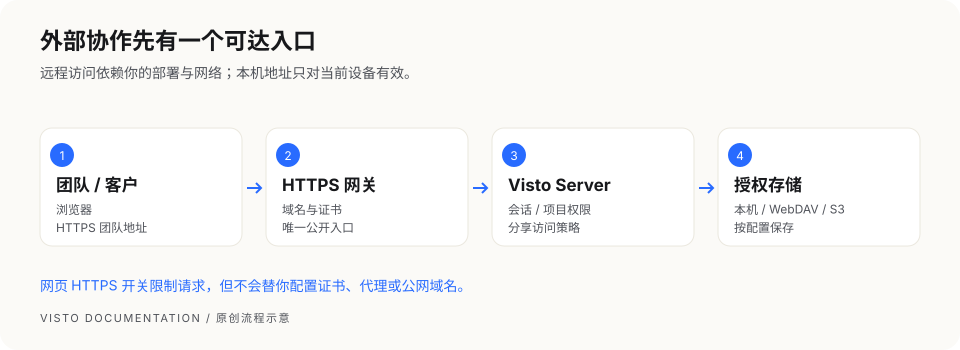

文档中心/设置与维护
VISTO USER GUIDE / 22
网络与远程访问
用户手册2026-10-03Server 浏览器工作台
默认原生 Server 只监听本机；默认 Compose Web 也绑定本机。把分享链接交给异地客户以前，先由部署维护者配置可达地址和 HTTPS 入口。


四个容易混淆的设置
| 设置 | 决定什么 | 不会替你完成什么 |
|---|---|---|
| 服务监听 / 网关入口 | 哪些设备可以连接 | 不自动生成公网域名 |
| HTTPS 网关 | 对外链路加密和入口路由 | 不自动授予项目权限 |
| 远程访问必须使用 HTTPS | 拒绝非本机明文 API 请求 | 不负责安装证书或配置代理 |
| 网页端添加本机目录权限 | Owner 网页能否添加主机存储 | 不授予普通成员任意目录访问 |
正确的开启顺序
- 维护者配置 HTTPS 域名、证书及反向代理，确保 Visto 正常工作。
- 用远程设备访问 HTTPS 地址并验证登录和分享。
- 在 Owner 设置 → 网络与安全 打开“远程访问必须使用 HTTPS”。
- 保存后立即生效，再检查团队和分享入口。
- 防火墙和代理应使 HTTPS 网关成为唯一公开入口。
该开关默认关闭。开启后，非回环明文 API 请求可能返回 426 security.https_required。本机 127.0.0.1 仍可使用 HTTP。正在通过远程 HTTP 操作时，系统会阻止会导致自锁的开启请求；请先切换到 HTTPS 或到部署主机操作。
由部署配置强制
REVIEW_STUDIO_REQUIRE_HTTPS=1 会强制 HTTPS 策略，网页不能关闭，需要维护者改主机配置并重启。代理信任和 Cookie 的安全标记由部署配置及真实请求协议决定，不能只打开网页开关就认为代理已正确配置。
推荐交付给成员的信息
团队的 HTTPS 地址、登录方式、项目邀请、能访问的网络范围及支持联系人。不要把主机配置、初始化令牌或底层存储密钥一并发送。